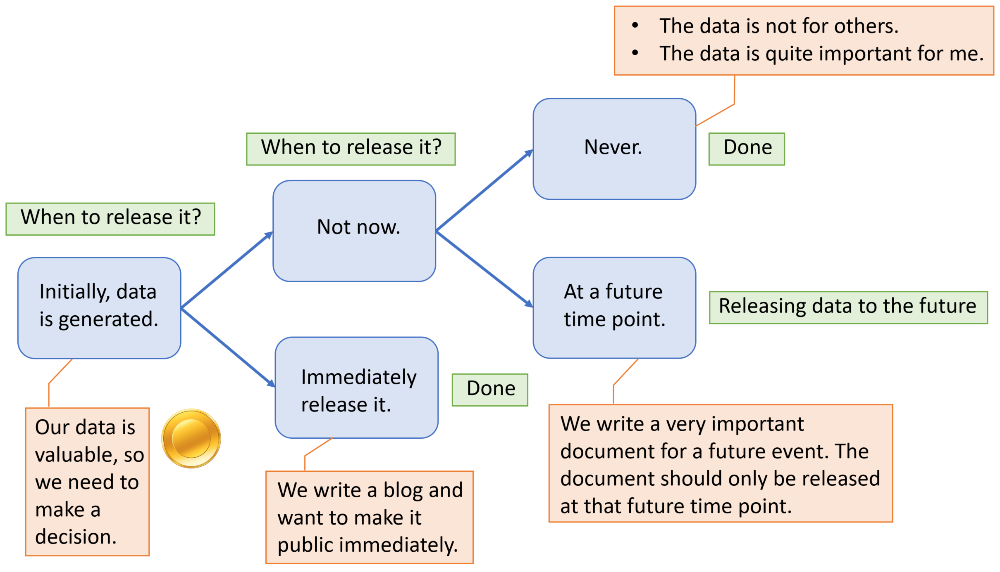
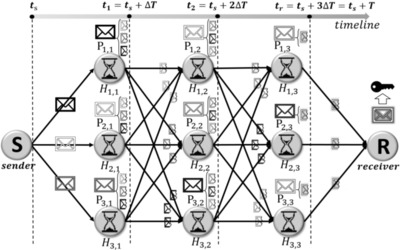

Overview
in a large-scale Distributed Hash Table (DHT) network that makes protected data available and accessible only at the defined release time.
As a distributed solution based on DHT, Emerge supports both decentralization and distributed control.
Motivation
Self-emerging Data:

Time-varying sensitivity of self-emerging data:
-
For some applications, the sensitivity of data can fall suddenly at a threshold time points:
- E.g., Online voting/bidding system and Online exams.
-
The sensitivity of data may also reduce gradually over time. After a threshold
level of sensitivity has reached, the data may become releasable:
- Personal data of individuals (e.g., web browsing patterns, location trajectory patterns, medical diagnostics information).
Preliminary Emerge protocols
- One-hop Approach: This scheme applies erasure coding to split the encryption key into fragments and routes them through an one-hop path to the receiver.
- Adjusted one-hop Approach: This scheme estimates the number of dead holder nodes and adjusts the key share routing to minimize the data loss.
- Multi-hop Approach: This scheme arranges multiple sets of nodes to route the key shares in relay from the sender to the receiver.

Publications
- Chao Li and Balaji Palanisamy, "Timed-release of Self-emerging Data using Distributed Hash Tables", Proc. of 37th IEEE International Conference on Distributed Computing Systems (ICDCS 2017), Atlanta, USA. [PDF]
- Chao Li and Balaji Palanisamy, "Emerge: Self-emerging Data Release using Cloud Data Storage", Proc. of 10th IEEE International Conference on Cloud Computing (Cloud 2017), Honolulu, USA.[PDF]